Sidenreng, Rappang
#semuaberawaldarirumah
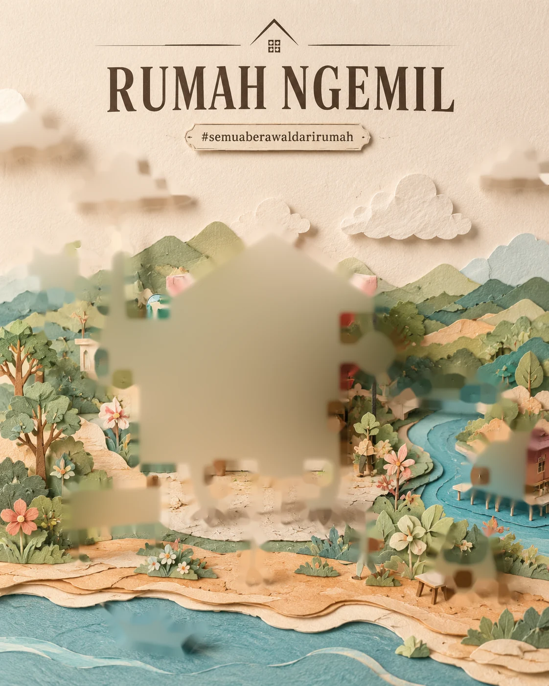
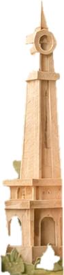
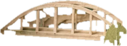
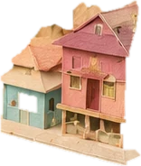
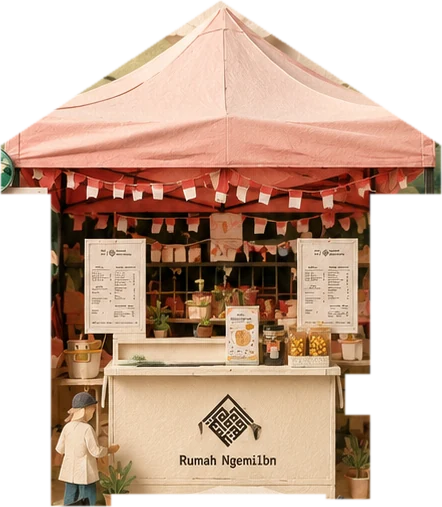
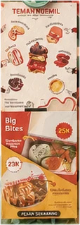
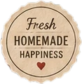
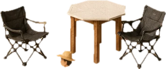
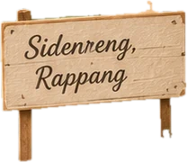
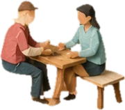
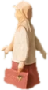
Ketuk gerai, papan tanda, atau seal di dalam ilustrasi untuk menjelajah.
Cerita Kami
Rumah Ngemil dimulai dari satu oven kecil, resep keluarga, dan kebiasaan berbagi camilan di ruang tamu. Semua yang kami jual pernah lebih dulu dibuat untuk orang rumah.
Kami memanggang dalam jumlah kecil setiap hari, membungkusnya dengan tangan, dan mengantarnya selagi masih hangat cerita — dari Sidenreng, Rappang, untuk meja makanmu.
— Keluarga Rumah Ngemil
Mentega asli, telur segar, gula secukupnya. Tidak ada yang kami sembunyikan di balik label.
Setiap batch dibuat pagi hari dalam jumlah terbatas, supaya sampai ke kamu masih terasa baru.
Dilipat, disegel, diberi catatan kecil. Seperti menyiapkan bekal untuk keluarga sendiri.
Porsi kami pas untuk diedarkan di meja. Camilan paling enak saat ada yang menemani.
Rumah Kami
Kabupaten Sidenreng Rappang — orang menyebutnya Sidrap — adalah tanah lumbung padi di Sulawesi Selatan. Di sinilah dapur kami berada, di antara sawah, danau, dan angin sore yang tenang.
Pesanan
Dipanggang segar setiap hari, dibungkus dengan tangan. Pilih kategorinya, lalu tambahkan ke pesanan.
Tentang
Mentega asli, telur segar, gula secukupnya. Kalau kami tidak mau memakannya di rumah, kami tidak menjualnya.
Tidak ada lini produksi. Ada oven rumah tangga, timer, dan tangan yang sama yang membuat sarapan tadi pagi.
Resep-resepnya campuran: kue kering warisan keluarga, risol gorengan pasar, dan rasa khas Sidrap.
Ukuran porsi kami pas untuk diedarkan di meja. Camilan paling enak saat ada teman yang menemani.
— Keluarga Rumah Ngemil